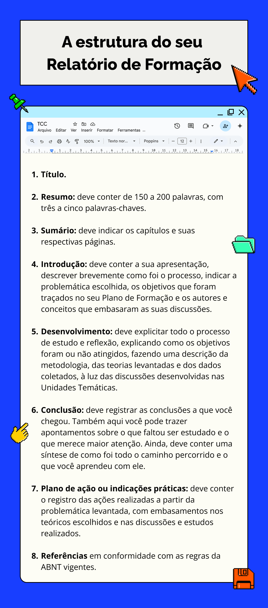

Sistematização do Relatório
Aprofundando a estrutura introduzida anteriormente, o Relatório deve ser apresentado da seguinte forma:

Título: A estrutura do seu Relatório de Formação
Fonte: Prosa (2025e).
Resumidamente, cabe destacar a necessidade de contextualização do trabalho realizado, de descrição e análise do processo, de uma ordem cronológica e detalhada para a narrativa e da reflexão sobre o que você aprendeu e os desafios, conquistas e frustrações que perpassaram o caminho. Enfim, registrando tudo o que aconteceu e relacionando o ponto de vista pessoal e profissional com o embasamento teórico trabalhado no decorrer do curso.
Esse Relatório é um registro pessoal da sua trajetória no curso, portanto é importante que ele seja construído a partir do Memorial, para que não sejam perdidos os registros realizados durante o processo. Claro que não é simplesmente um “copia e cola” do que já foi escrito. É necessário revisitar os registros e organizar as ideias, a fim de produzir um texto que represente a construção do processo de estudo.
Portanto, não é apenas uma descrição dos eventos que aconteceram, mas uma reflexão a partir da problemática levantada, que, analisada com embasamento teórico, tem o potencial de provocar mudanças na realidade atual da EPT. Os registros feitos durante o curso são importantes porque, a partir de um relato minucioso, conseguimos analisar melhor a nossa realidade.
Alguns sites e vídeos com informações sobre as regras da ABNT. Não esqueça de seguir as orientações de sua instituição!